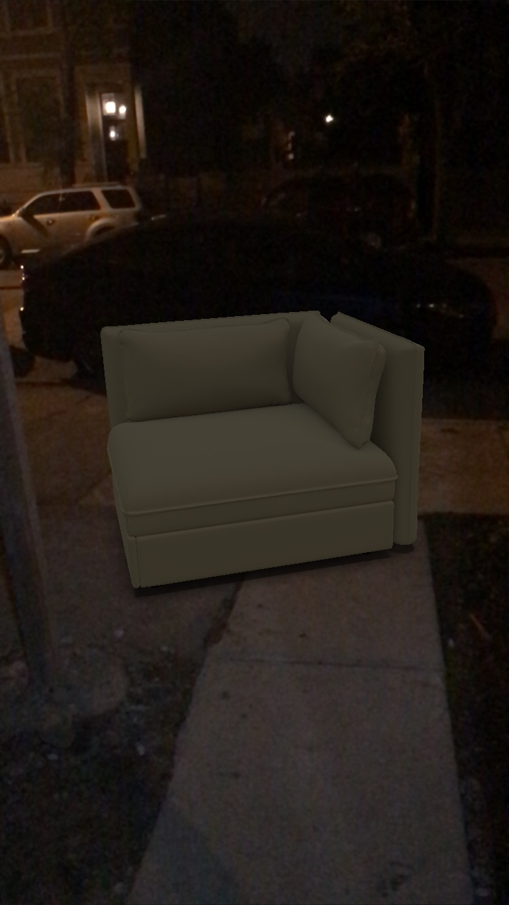

Indoors

Outdoors
Week 8: Pocket Universe Review
Using AR glasses regularly and being aware of the planet positions might help people become more aware of their locations. Take, for example, the North Star. If people could constantly look up for the star and recognize it, it may cause people to be much more spatially aware. Let’s say I was at Navy Pier and I looked towards the North star. Next time I’m on campus at UIC I could also look up at the sky and notice that the North Star is in a slightly different position and I could deduce where Navy Pier is in respect to my current location.
For an application like this I think it would be interesting to list facts about the stars the user is looking at. If the user is looking at a point in the sky for lets say longer than 2 seconds, more information should appear. It could be the name of the planet, size, weight, distance from you, the planetary system it belongs to, what constellations it belongs to, etc. The user could even begin favoriting stars so they can see how the star moves over time, according to its orbit. As planets do orbit, there are optimal times to look at certain planets. Perhaps the glasses could state that optimal date or you could see what stars are optimal at a certain time. There could even become a scrapbook of sorts where the application keeps track of the planets and stars you’ve seen on their optimal date so the user can begin ‘collecting’, so to speak.
Another aspect that could be implemented is the ability to share your view with others. If, for example, a parent lived in Maine and their child lived in Minnesota, the two could share what they see with the other. So if the parent shared their view, the child’s glasses would show the stars the parent sees. It could be a great bonding experience as people would feel much closer.
I think an application like this would be great for increasing interest in space. Making it a game to collect stars or being able to share what you see with others will cause people to spend more time getting acquainted with the universe around them and I think it would be a great benefit to society to be more in tune with our universe.